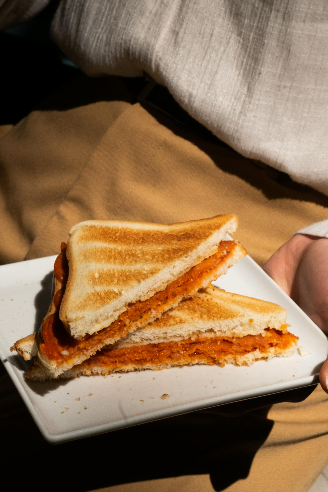

Como hacer Sandwiches Dorados

Descripción
El siguiente sandwich agarra la formula de un sandwich sencillo, pero hecho con un poco mas de amor, cariño, sabor y tiempo (te prometo que vale la pena, es rápido)
Tiempo de duración: 20 minutos
Ingredientes
- Pan de molde
- Jamon
- Queso
- Mantequilla
- Oregano
- Salsa picante (La que mas te guste)
- Mayonesa
- Mostaza
Pasos
- Untar en las tapas del pan la mostaza y la mayonesa
- Prende la sarten a fuego bajo y calienta las tapas internas 2 minutos
- Ponle dos rebanadas de jamon, dos rebanadas de queso, la salsa de chile y cierra el sandwich
- Unta mantequilla en la sarten y pon tu sandwich de un lado hasta que deje de chillar la sarten
- Remueve, vuelve a untar mantequilla y voltea el sandwich
- Una vez dorado de ambos lados, saca el sandwich y ponle una pizca de oregano en la parte de arriba
- Corta en dos triangulos tu sandwich, creeme, es importante
- Disfruta!
Inicio